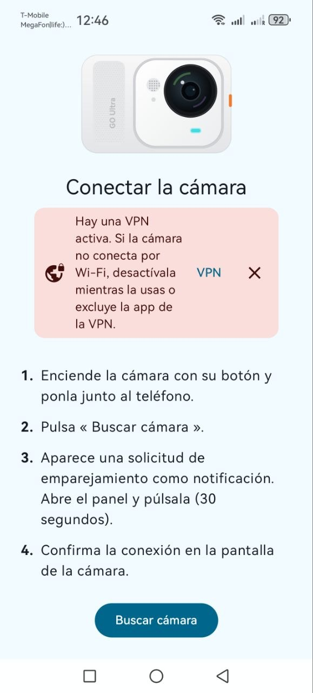
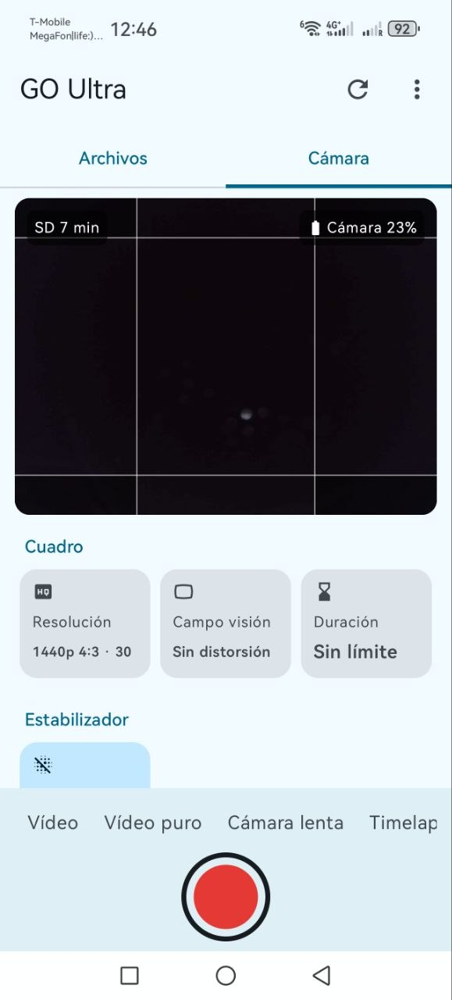
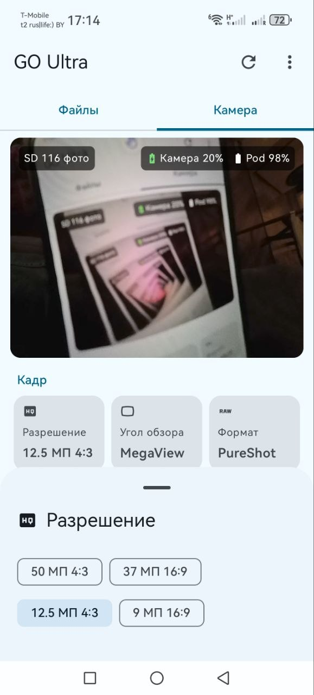
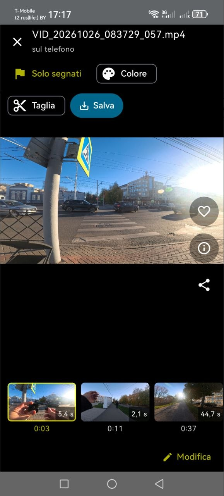
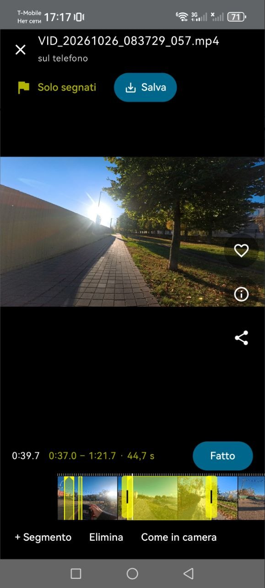
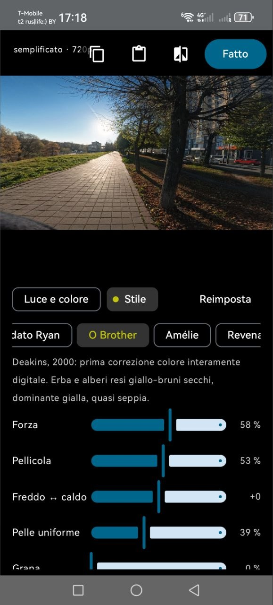
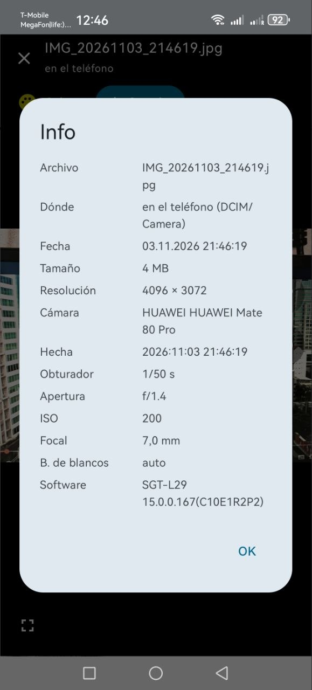
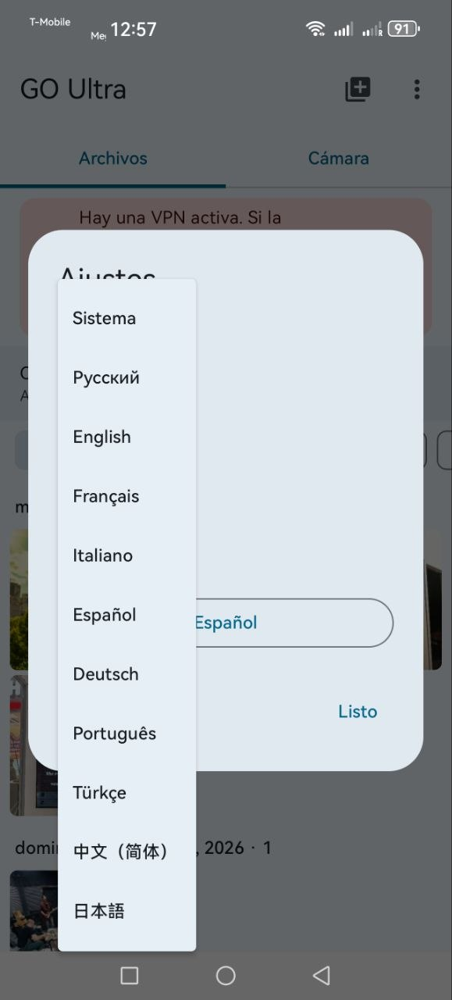

Why it stands out
Чем выделяется
Editing without downloading the whole clip
Монтаж без перекачивания всего файла
Cut 20 seconds out of the middle of a 30 GB clip: the app reads only those bytes from the camera over Wi-Fi and saves the piece straight to the gallery — the whole file never lands on the phone. Several pieces can be joined into one clip, saved as shot without re-encoding.
Вырезать 20 секунд из середины 30-гигабайтного ролика: приложение читает с камеры только нужные байты и сразу сохраняет кусок в галерею — целиком файл в телефон не попадает. Несколько кусков склеиваются в один клип и сохраняются без перекодирования.
Colour like in the movies
Цвет «как в кино»
Film-look presets, I-Log → Rec.709 applied on the fly in the viewer, exposure, saturation and sharpness — graded live and baked into the saved copy.
Плёночные пресеты, I-Log → Rec.709 на лету в просмотре, экспозиция, насыщенность и резкость — цветокор в реальном времени, при сохранении запекается в файл.
Tiny next to the official app
Крошечный рядом с официальным
The whole app is under 5 MB — the official one is about 1.5 GB (sizes approximate). No account, no ads, no cloud; Google Play Services not required.
Всё приложение — меньше 5 МБ, у официального — примерно 1,5 ГБ (цифры примерные). Без аккаунта, рекламы и облака; сервисы Google не нужны.
What it does
Что умеет
One-button connection
Подключение одной кнопкой
Wakes the camera over Bluetooth — even a switched-off one — and joins its Wi-Fi by itself.
Будит камеру по Bluetooth, даже выключенную, и сам подключается к её Wi-Fi.
Files and downloads
Файлы и скачивание
Previews, view straight from the camera, background download to the gallery with resume, no duplicates.
Превью, просмотр прямо с камеры, скачивание в галерею в фоне с докачкой, без дублей.
Live photos
Живые фото
Saved as Android Motion Photo with the original clip kept inside; pick any frame as the cover.
Сохраняются как Android Motion Photo с исходным роликом внутри; любой кадр можно сделать обложкой.
Shooting and live view
Съёмка и трансляция
Record and take photos from the phone, live preview, all of the camera's settings for its 12 modes.
Запись и фото с телефона, трансляция, все настройки камеры для её 12 режимов.
Highlights and clips
Отметки и клипы
Shows the camera's highlight marks, edits the pieces on a timeline and saves them as one clip without re-encoding.
Показывает отметки камеры, правит куски на временной шкале и сохраняет их одним клипом без перекодирования.
Colour
Цвет
I-Log → Rec.709, exposure, saturation, sharpness and film looks for videos, photos and live photos.
I-Log → Rec.709, экспозиция, насыщенность, резкость и плёночные стили для видео, фото и живых фото.
Alpha: other Insta360 cameras
Альфа: другие камеры Insta360
Experimental. The universal build can also pull files off other
Insta360 cameras — the ones this app was not built around. The camera's Wi-Fi is joined by hand: switch the camera
on, connect to its …OSC access point in the phone's Wi-Fi settings (the password is usually
88888888) and open menu ⋮ → “Another camera (alpha)…”. The app finds the camera,
shows its files and downloads them into DCIM/Camera.
Экспериментально. Сборка universal умеет забирать файлы и с других
камер Insta360 — тех, вокруг которых приложение не строилось. Wi-Fi камеры подключается вручную: включите
камеру, подключитесь к её точке доступа …OSC в настройках Wi-Fi телефона (пароль обычно
88888888) и откройте меню ⋮ → «Другая камера (альфа)…». Приложение найдёт
камеру, покажет её файлы и скачает их в DCIM/Camera.
- Models with the OSC API: X3, X4, X5, ONE X2/X3, ONE RS, Ace, Ace Pro and other X/ONE-series cameras — not tried on real X-series hardware yet, so a camera-profile report from owners is what confirms and adds a model.
- GO 2 / GO 3 / GO 3S: a separate experimental entry in the setup wizard — join the camera's Wi-Fi and tap “Connect”; the app picks up that network and continues as with the GO Ultra. A tester with such a camera would help.
- Read-only: the alpha never changes camera settings and never deletes files;
.insv(360) is saved as it is — open it in Insta360 Studio. - How it works and how to send a camera profile:
docs/ALPHA-OTHER-CAMERAS.md. The alpha APK: v0.17-alpha1 (a pre-release — the big “Download the APK” button above points to the stable build).
- Модели с API OSC: X3, X4, X5, ONE X2/X3, ONE RS, Ace, Ace Pro и другие камеры X/ONE-серий — на живом железе X-серии ещё не проверялось, поэтому модель подтверждает и добавляет отчёт «профиль камеры» от владельца.
- GO 2 / GO 3 / GO 3S: отдельный экспериментальный пункт в мастере первого запуска — подключитесь к Wi-Fi камеры и нажмите «Подключиться»: приложение подхватит эту сеть и дальше работает как с GO Ultra. Нужен тестер с такой камерой.
- Только чтение: альфа ничего не настраивает в камере и никогда не удаляет файлы;
.insv(360) сохраняется как есть — откройте его в Insta360 Studio. - Как это работает и как прислать профиль:
docs/ALPHA-OTHER-CAMERAS.md. APK альфы: v0.17-alpha1 (pre-release — большая кнопка «Скачать APK» выше ведёт на стабильную сборку).
Screenshots
Скриншоты








Getting started
Как начать
- Download the APK from Releases and install it (you may need to allow installs from unknown sources).
- Switch the camera on with its button and put it next to the phone.
- Confirm the pairing — Android shows the request as a notification in the shade.
- Confirm the connection on the camera's screen.
After that you do not need to switch the camera on — the app wakes it itself.
- Скачайте APK из раздела Releases и установите его (может понадобиться разрешить установку из неизвестных источников).
- Включите камеру кнопкой и положите рядом с телефоном.
- Подтвердите сопряжение — Android показывает запрос уведомлением в шторке.
- Подтвердите подключение на экране камеры.
Дальше включать камеру не нужно — приложение будит её само.
Requirements
Требования
- Android 10 or newer; no Google Play Services needed.
- Insta360 GO Ultra, tested with firmware v1.9.29.
- A VPN on the phone can block the camera's Wi-Fi — switch it off or exclude the app.
- Android 10 или новее; сервисы Google не нужны.
- Insta360 GO Ultra, проверено с прошивкой v1.9.29.
- VPN на телефоне может мешать Wi-Fi камеры — отключите его или добавьте приложение в исключения.
Languages
Языки интерфейса
Русский · English · Français · Italiano · Español · Deutsch · Português · Türkçe · 中文（简体）· 日本語
For developers
Разработчикам
The camera's protocol (Bluetooth, TCP 6666, HTTP) was reverse-engineered; the notes are in
docs/PROTOCOL.md.
The app is MIT-licensed.
Протокол камеры (Bluetooth, TCP 6666, HTTP) восстановлен обратной разработкой; заметки —
в docs/PROTOCOL.md.
Лицензия приложения — MIT.